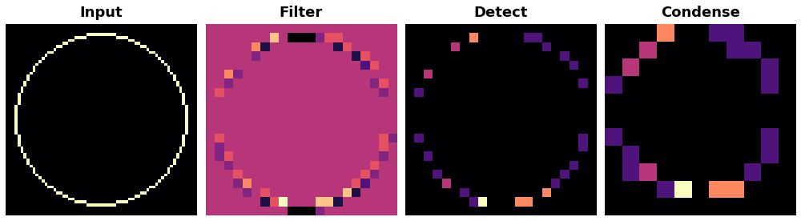
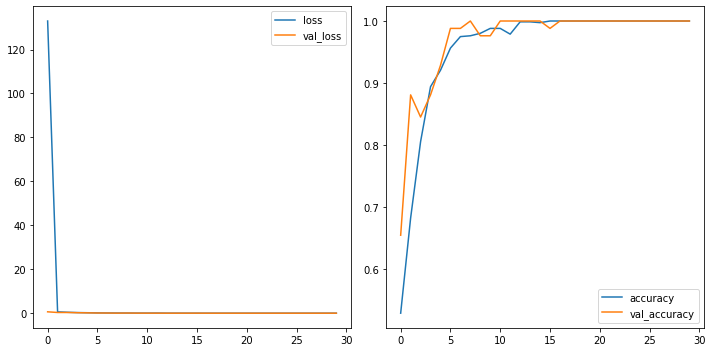
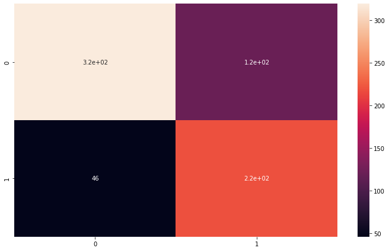
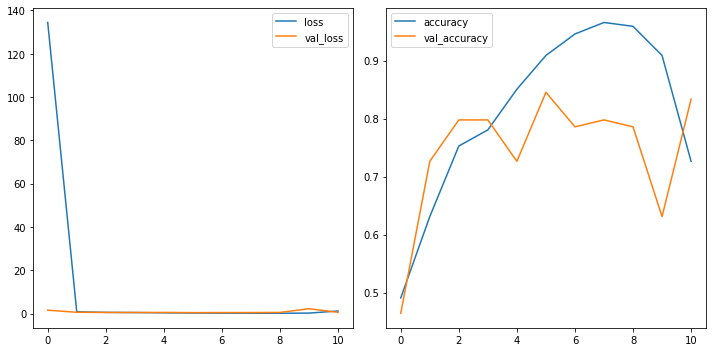
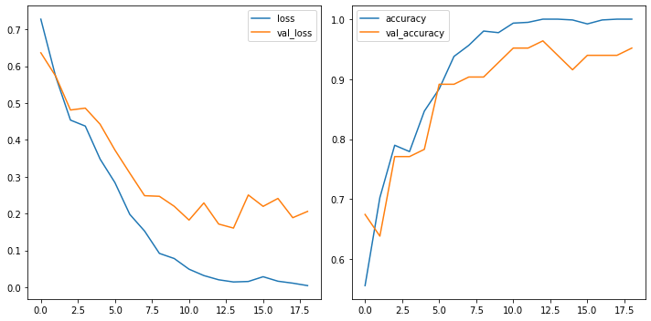
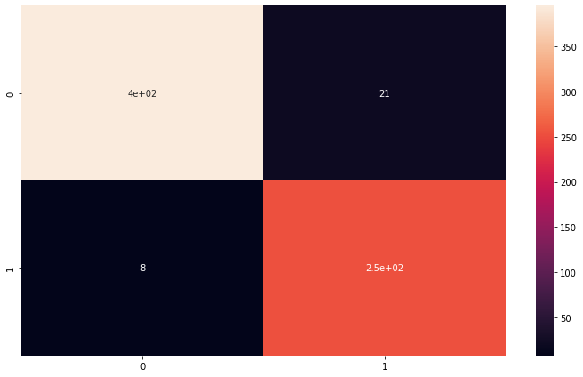
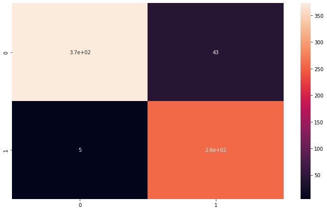
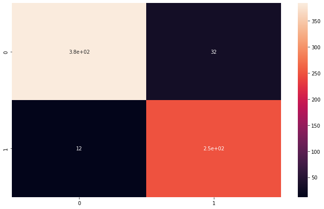
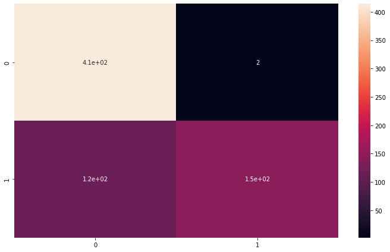

General Applications of Neural Networks
Session 4: Computer Vision Part 2 (Defect Detection Case Study)¶
Instructor: Wesley Beckner
Contact: wesleybeckner@gmail.com
In this session we will continue with our exploration of CNNs. In the previous session we discussed three flagship layers for the CNN: convolution ReLU and maximum pooling. Here we'll discuss the sliding window, how to build your custom CNN, and data augmentation for images.
images in this notebook borrowed from Ryan Holbrook
For more information on the dataset we are using today watch this video
4.0 Preparing Environment and Importing Data¶
4.0.1 Enabling and testing the GPU¶
First, you'll need to enable GPUs for the notebook:
- Navigate to Edit→Notebook Settings
- select GPU from the Hardware Accelerator drop-down
Next, we'll confirm that we can connect to the GPU with tensorflow:
%tensorflow_version 2.x
import tensorflow as tf
device_name = tf.test.gpu_device_name()
if device_name != '/device:GPU:0':
raise SystemError('GPU device not found')
print('Found GPU at: {}'.format(device_name))
Found GPU at: /device:GPU:0
4.0.2 Observe TensorFlow speedup on GPU relative to CPU¶
This example constructs a typical convolutional neural network layer over a random image and manually places the resulting ops on either the CPU or the GPU to compare execution speed.
%tensorflow_version 2.x
import tensorflow as tf
import timeit
device_name = tf.test.gpu_device_name()
if device_name != '/device:GPU:0':
print(
'\n\nThis error most likely means that this notebook is not '
'configured to use a GPU. Change this in Notebook Settings via the '
'command palette (cmd/ctrl-shift-P) or the Edit menu.\n\n')
raise SystemError('GPU device not found')
def cpu():
with tf.device('/cpu:0'):
random_image_cpu = tf.random.normal((100, 100, 100, 3))
net_cpu = tf.keras.layers.Conv2D(32, 7)(random_image_cpu)
return tf.math.reduce_sum(net_cpu)
def gpu():
with tf.device('/device:GPU:0'):
random_image_gpu = tf.random.normal((100, 100, 100, 3))
net_gpu = tf.keras.layers.Conv2D(32, 7)(random_image_gpu)
return tf.math.reduce_sum(net_gpu)
# We run each op once to warm up; see: https://stackoverflow.com/a/45067900
cpu()
gpu()
# Run the op several times.
print('Time (s) to convolve 32x7x7x3 filter over random 100x100x100x3 images '
'(batch x height x width x channel). Sum of ten runs.')
print('CPU (s):')
cpu_time = timeit.timeit('cpu()', number=10, setup="from __main__ import cpu")
print(cpu_time)
print('GPU (s):')
gpu_time = timeit.timeit('gpu()', number=10, setup="from __main__ import gpu")
print(gpu_time)
print('GPU speedup over CPU: {}x'.format(int(cpu_time/gpu_time)))
Time (s) to convolve 32x7x7x3 filter over random 100x100x100x3 images (batch x height x width x channel). Sum of ten runs.
CPU (s):
3.005574539999543
GPU (s):
0.03898585099977936
GPU speedup over CPU: 77x
4.0.3 Import Packages¶
# clear memory from cpu/gpu task (skimage load method is ram intensive)
import gc
gc.collect()
1984
import os
import pandas as pd
import numpy as np
import seaborn as sns
import matplotlib.pyplot as plt
from skimage import io, feature, filters, exposure, color
from skimage.transform import rescale, resize
from sklearn.metrics import classification_report,confusion_matrix
#importing required tf libraries
import tensorflow as tf
from tensorflow.keras import layers
from tensorflow.keras.layers import Activation, Dropout, Flatten, Dense, Conv2D, MaxPooling2D, InputLayer
from tensorflow.data.experimental import AUTOTUNE
from tensorflow.keras.layers.experimental import preprocessing
from tensorflow.keras.preprocessing import image_dataset_from_directory
from tensorflow.keras.preprocessing.image import ImageDataGenerator, load_img, img_to_array
from tensorflow.keras.models import Sequential
from tensorflow.keras.callbacks import EarlyStopping
# Sync your google drive folder
from google.colab import drive
drive.mount("/content/drive")
Drive already mounted at /content/drive; to attempt to forcibly remount, call drive.mount("/content/drive", force_remount=True).
4.0.4 Load Dataset¶
We will actually take a beat here today. When we started building our ML frameworks, we simply wanted our data in a numpy array to feed it into our pipeline. At some point, especially when working with images, the data becomes too large to fit into memory. For this reason we need an alternative way to import our data. With the merger of keras/tf two popular frameworks became available, ImageDataGenerator and image_dataset_from_directory both under tf.keras.preprocessing.image. image_dataset_from_directory can sometimes be faster (tf origin) but ImageDataGenerator is a lot simpler to use and has on-the-fly data augmentation capability (keras).
For a full comparison of methods visit this link
4.0.4.0 Define Global Parameters¶
# full dataset can be attained from kaggle if you are interested
# https://www.kaggle.com/ravirajsinh45/real-life-industrial-dataset-of-casting-product?select=casting_data
# set global parameters for all import dataset methods
image_shape = (300,300,3) # the images actually are 300,300,3
batch_size = 32
validation_split = 0.1
seed_value = 42
folder = '/content/drive/MyDrive/courses/tech_fundamentals/TECH_FUNDAMENTALS/data/casting_data_class_practice'
train_path = folder + '/train/'
test_path = folder + '/test/'
from numpy.random import seed
seed(seed_value)
tf.random.set_seed(seed_value)
4.0.4.1 Loading data with from_tensor_slices¶
class MyImageLoader:
def __init__(self):
self.classifer = None
self.folder = folder
def imread_convert(self, f):
return io.imread(f).astype(np.uint8)
def load_data_from_folder(self, dir):
# type(dir) for plane/ticket/truck/etc dataset
# else for impellar dataset
filetype = set([i.split('.')[-1] for i in [x[2] for x in os.walk(folder + dir)][1:][0]])
if len(filetype) != 1:
raise Exception('Multiple filetypes in directory, will cause error')
suffix = filetype.pop()
dirs = [x[0] + f'/*.{suffix}' for x in os.walk(self.folder + dir) if x[0].split('/')[-1] != '']
dirs = ':'.join(dirs)
ic = io.ImageCollection(dirs, load_func=self.imread_convert)
# infer labels from directory structure
label_names = [x[1] for x in os.walk(folder + dir)][0]
img_amounts = [len(y) for y in [x[2] for x in os.walk(folder + dir)][1:]]
labels = [item for sublist in [[i]*j for i,j in zip(label_names, img_amounts)] for item in sublist]
labels = np.array(labels)
#create one large array of image data
data = io.concatenate_images(ic)
#resize to target shape (memory intensive)
# data = resize(data, (data.shape[0], *image_shape[:2])) #uncomment if you need to resize images
return(data,labels)
# Create an object of the class `MyImageLoader`
img_clf = MyImageLoader()
# load images
(train_val_raw, train_val_labels) = img_clf.load_data_from_folder('/train/')
(test_raw, test_labels) = img_clf.load_data_from_folder('/test/')
train_val_raw = train_val_raw.astype(np.float32)
test_raw = test_raw.astype(np.float32)
classes = list(np.unique(train_val_labels))
print(f"Classes: {classes}")
print("train and validation labels: {}".format(len(train_val_labels)))
print("test labels: {}".format(len(test_labels)))
# convert labels to numeric
for i in range(len(classes)):
train_val_labels[train_val_labels == classes[i]] = i
test_labels[test_labels == classes[i]] = i
train_val_labels = train_val_labels.astype(float)
test_labels = test_labels.astype(float)
# create train/val/test and shuffle
train_val_dataset = tf.data.Dataset.from_tensor_slices((train_val_raw, train_val_labels))
test_dataset = tf.data.Dataset.from_tensor_slices((test_raw, test_labels))
train_val_dataset = train_val_dataset.shuffle(buffer_size=len(train_val_dataset), seed=seed_value)
test_dataset = test_dataset.shuffle(buffer_size=len(test_dataset), seed=seed_value)
# use validation_split
val_len = int(validation_split * len(train_val_raw))
val_dataset = train_val_dataset.take(val_len)
train_dataset = train_val_dataset.skip(val_len)
print(f"Train size: {len(train_dataset)}\nVal size: {len(val_dataset)}\nTest size: {len(test_dataset)}")
# batch the data
train_dataset_batched = train_dataset.batch(batch_size)
val_dataset_batched = val_dataset.batch(batch_size)
test_dataset_batched = test_dataset.batch(batch_size)
print(f"Train batches: {len(train_dataset_batched)}\nVal batches: {len(val_dataset_batched)}\nTest batches: {len(test_dataset_batched)}")
Classes: ['def_front', 'ok_front']
train and validation labels: 840
test labels: 678
Train size: 756
Val size: 84
Test size: 678
Train batches: 24
Val batches: 3
Test batches: 22
4.0.4.2 Loading Data with ImageDataGenerator¶
image_gen = ImageDataGenerator(rescale=1/255,
validation_split=validation_split) # normalize pixels to 0-1
#we're using keras inbuilt function to ImageDataGenerator so we
# dont need to label all images into 0 and 1
print("loading training set...")
train_set_keras = image_gen.flow_from_directory(train_path,
target_size=image_shape[:2],
color_mode="rgb",
batch_size=batch_size,
class_mode="sparse",
subset="training",
shuffle=True,
seed=seed_value)
print("loading validation set...")
val_set_keras = image_gen.flow_from_directory(train_path,
target_size=image_shape[:2],
color_mode="rgb",
batch_size=batch_size,
class_mode="sparse",
subset="validation",
shuffle=True,
seed=seed_value)
print("loading testing set...")
test_set_keras = image_gen.flow_from_directory(test_path,
target_size=image_shape[:2],
color_mode="rgb",
batch_size=batch_size,
class_mode="sparse",
shuffle=False)
loading training set...
Found 757 images belonging to 2 classes.
loading validation set...
Found 83 images belonging to 2 classes.
loading testing set...
Found 678 images belonging to 2 classes.
4.0.4.3 loading data with image_dataset_from_directory¶
This method should be approx 2x faster than ImageDataGenerator
# Load training and validation sets
print("loading training set...")
ds_train_ = image_dataset_from_directory(
train_path,
labels="inferred",
label_mode="int",
color_mode="rgb",
image_size=image_shape[:2],
batch_size=batch_size,
validation_split=validation_split,
subset="training",
shuffle=True,
seed=seed_value,
)
print("loading validation set...")
ds_val_ = image_dataset_from_directory(
train_path,
labels="inferred",
label_mode="int",
color_mode="rgb",
image_size=image_shape[:2],
batch_size=batch_size,
validation_split=validation_split,
subset="validation",
shuffle=True,
seed=seed_value,
)
print("loading testing set...")
ds_test_ = image_dataset_from_directory(
test_path,
labels="inferred",
label_mode="int",
color_mode="rgb",
image_size=image_shape[:2],
batch_size=batch_size,
shuffle=False,
)
train_set_tf = ds_train_.prefetch(buffer_size=AUTOTUNE)
val_set_tf = ds_val_.prefetch(buffer_size=AUTOTUNE)
test_set_tf = ds_test_.prefetch(buffer_size=AUTOTUNE)
loading training set...
Found 840 files belonging to 2 classes.
Using 756 files for training.
loading validation set...
Found 840 files belonging to 2 classes.
Using 84 files for validation.
loading testing set...
Found 678 files belonging to 2 classes.
4.0.4.4 View Images¶
# view some images
def_path = '/def_front/cast_def_0_1001.jpeg'
ok_path = '/ok_front/cast_ok_0_1.jpeg'
image_path = train_path + ok_path
image = tf.io.read_file(image_path)
image = tf.io.decode_jpeg(image)
image = resize(image, (256, 256),
anti_aliasing=True)
plt.figure(figsize=(6, 6))
plt.imshow(tf.squeeze(image), cmap='gray')
plt.axis('off')
plt.show();
4.1 Understanding the Sliding Window¶
The kernels we just reviewed, need to be swept or slid along the preceding layer. We call this a sliding window, the window being the kernel.

What do you notice about the gif? One perhaps obvious observation is that you can't scoot all the way up to the border of the input layer, this is because the kernel defines operations around the centered pixel and so you bang up against the margin of the input array. We can change the behavior at the boundary with a padding hyperparameter. A second observation, is that the distance we move the kernel along in each step could be variable, we call this the stride. We will explore the affects of each of these.
from tensorflow import keras
from tensorflow.keras import layers
model = keras.Sequential([
layers.Conv2D(filters=64,
kernel_size=3,
strides=1,
padding='same',
activation='relu'),
layers.MaxPool2D(pool_size=2,
strides=1,
padding='same')
# More layers follow
])
4.1.1 Stride¶
Stride defines the the step size we take with each kernel as it passes along the input array. The stride needs to be defined in both the horizontal and vertical dimensions. This animation shows a 2x2 stride

The stride will often be 1 for CNNs, where we don't want to lose any important information. Maximum pooling layers will often have strides greater than 1, to better summarize/accentuate the relevant features/activations.
If the stride is the same in both the horizontal and vertical directions, it can be set with a single number like strides=2 within keras.
4.1.2 Padding¶
Padding attempts to resolve our issue at the border: our kernel requires information surrounding the centered pixel, and at the border of the input array we don't have that information. What to do?
We have a couple popular options within the keras framework. We can set padding='valid' and only slide the kernel to the edge of the input array. This has the drawback of feature maps shrinking in size as we pass through the NN. Another option is to set padding='same' what this will do is pad the input array with 0's, just enough of them to allow the feature map to be the same size as the input array. This is shown in the gif below:

The downside of setting the padding to same will be that features at the edges of the image will be diluted.
🏋️ Exercise 1: Exploring Sliding Windows¶
from skimage import draw, transform
from itertools import product
# helper functions borrowed from Ryan Holbrook
# https://mathformachines.com/
def circle(size, val=None, r_shrink=0):
circle = np.zeros([size[0]+1, size[1]+1])
rr, cc = draw.circle_perimeter(
size[0]//2, size[1]//2,
radius=size[0]//2 - r_shrink,
shape=[size[0]+1, size[1]+1],
)
if val is None:
circle[rr, cc] = np.random.uniform(size=circle.shape)[rr, cc]
else:
circle[rr, cc] = val
circle = transform.resize(circle, size, order=0)
return circle
def show_kernel(kernel, label=True, digits=None, text_size=28):
# Format kernel
kernel = np.array(kernel)
if digits is not None:
kernel = kernel.round(digits)
# Plot kernel
cmap = plt.get_cmap('Blues_r')
plt.imshow(kernel, cmap=cmap)
rows, cols = kernel.shape
thresh = (kernel.max()+kernel.min())/2
# Optionally, add value labels
if label:
for i, j in product(range(rows), range(cols)):
val = kernel[i, j]
color = cmap(0) if val > thresh else cmap(255)
plt.text(j, i, val,
color=color, size=text_size,
horizontalalignment='center', verticalalignment='center')
plt.xticks([])
plt.yticks([])
def show_extraction(image,
kernel,
conv_stride=1,
conv_padding='valid',
activation='relu',
pool_size=2,
pool_stride=2,
pool_padding='same',
figsize=(10, 10),
subplot_shape=(2, 2),
ops=['Input', 'Filter', 'Detect', 'Condense'],
gamma=1.0):
# Create Layers
model = tf.keras.Sequential([
tf.keras.layers.Conv2D(
filters=1,
kernel_size=kernel.shape,
strides=conv_stride,
padding=conv_padding,
use_bias=False,
input_shape=image.shape,
),
tf.keras.layers.Activation(activation),
tf.keras.layers.MaxPool2D(
pool_size=pool_size,
strides=pool_stride,
padding=pool_padding,
),
])
layer_filter, layer_detect, layer_condense = model.layers
kernel = tf.reshape(kernel, [*kernel.shape, 1, 1])
layer_filter.set_weights([kernel])
# Format for TF
image = tf.expand_dims(image, axis=0)
image = tf.image.convert_image_dtype(image, dtype=tf.float32)
# Extract Feature
image_filter = layer_filter(image)
image_detect = layer_detect(image_filter)
image_condense = layer_condense(image_detect)
images = {}
if 'Input' in ops:
images.update({'Input': (image, 1.0)})
if 'Filter' in ops:
images.update({'Filter': (image_filter, 1.0)})
if 'Detect' in ops:
images.update({'Detect': (image_detect, gamma)})
if 'Condense' in ops:
images.update({'Condense': (image_condense, gamma)})
# Plot
plt.figure(figsize=figsize)
for i, title in enumerate(ops):
image, gamma = images[title]
plt.subplot(*subplot_shape, i+1)
plt.imshow(tf.image.adjust_gamma(tf.squeeze(image), gamma))
plt.axis('off')
plt.title(title)
Create an image and kernel:
import tensorflow as tf
import matplotlib.pyplot as plt
plt.rc('figure', autolayout=True)
plt.rc('axes', labelweight='bold', labelsize='large',
titleweight='bold', titlesize=18, titlepad=10)
plt.rc('image', cmap='magma')
image = circle([64, 64], val=1.0, r_shrink=3)
image = tf.reshape(image, [*image.shape, 1])
# Bottom sobel
kernel = tf.constant(
[[-1, -2, -1],
[0, 0, 0],
[1, 2, 1]],
)
show_kernel(kernel)

What do we think this kernel is meant to detect for?
We will apply our kernel with a 1x1 stride and our max pooling with a 2x2 stride and pool size of 2.
show_extraction(
image, kernel,
# Window parameters
conv_stride=1,
pool_size=2,
pool_stride=2,
subplot_shape=(1, 4),
figsize=(14, 6),
)

Works ok! what about a higher conv stride?
show_extraction(
image, kernel,
# Window parameters
conv_stride=3,
pool_size=2,
pool_stride=2,
subplot_shape=(1, 4),
figsize=(14, 6),
)

Looks like we lost a bit of information!
Sometimes published models will use a larger kernel and stride in the initial layer to produce large-scale features early on in the network without losing too much information (ResNet50 uses 7x7 kernels with a stride of 2). For now, without having much experience it's safe to set conv strides to 1.
Take a moment here with the given kernel and explore different settings for applying both the kernel and the max_pool
conv_stride=YOUR_VALUE, # condenses pixels
pool_size=YOUR_VALUE,
pool_stride=YOUR_VALUE, # condenses pixels
Given a total condensation of 8 (I'm taking condensation to mean conv_stride x pool_stride). what do you think is the best combination of values for conv_stride, pool_size, and pool_stride?
4.2 Building a Custom CNN¶
As we move through the network, small-scale features (lines, edges, etc.) turn to large-scale features (shapes, eyes, ears, etc). We call these blocks of convolution, ReLU, and max pool convolutional blocks and they are the low level modular framework we work with. By this means, the CNN is able to design it's own features, ones suited for the classification or regression task at hand.
We will design a custom CNN for the Casting Defect Detection Dataset.
4.2.1 Define Architecture¶
In the following I'm going to double the filter size after the first block. This is a common pattern as the max pooling layers forces us in the opposite direction.
def build_model():
# Creating model
model = Sequential()
model.add(InputLayer(input_shape=(image_shape)))
model.add(Conv2D(filters=8, kernel_size=(3,3), activation='relu',))
model.add(MaxPooling2D(pool_size=(2, 2)))
model.add(Conv2D(filters=16, kernel_size=(3,3), activation='relu',))
model.add(MaxPooling2D(pool_size=(2, 2)))
model.add(Conv2D(filters=16, kernel_size=(3,3), activation='relu',))
model.add(MaxPooling2D(pool_size=(2, 2)))
model.add(Flatten())
model.add(Dense(224))
model.add(Activation('relu'))
# Last layer
model.add(Dense(2))
base_learning_rate = 0.001
model.compile(loss=tf.keras.losses.SparseCategoricalCrossentropy(from_logits=True),
optimizer=tf.keras.optimizers.Adam(learning_rate=base_learning_rate),
metrics=['accuracy'])
print(model.summary())
return model
early_stop = EarlyStopping(monitor='val_loss',
patience=5,
restore_best_weights=True,)
4.2.1 Train and Evaluate Model¶
To save/load weights and training history:
# model.save('inspection_of_casting_products.h5')
# model.load_weights('inspection_of_casting_products.h5')
# losses.to_csv('history_simple_model.csv', index=False)
4.2.1.1 from_tensor_slices¶
%%time
model = build_model()
with tf.device('/device:GPU:0'):
results = model.fit(train_dataset_batched,
epochs=30,
validation_data=val_dataset_batched,
callbacks=[early_stop]
)
Model: "sequential_6"
_________________________________________________________________
Layer (type) Output Shape Param #
=================================================================
conv2d_76 (Conv2D) (None, 298, 298, 8) 224
max_pooling2d_10 (MaxPoolin (None, 149, 149, 8) 0
g2D)
conv2d_77 (Conv2D) (None, 147, 147, 16) 1168
max_pooling2d_11 (MaxPoolin (None, 73, 73, 16) 0
g2D)
conv2d_78 (Conv2D) (None, 71, 71, 16) 2320
max_pooling2d_12 (MaxPoolin (None, 35, 35, 16) 0
g2D)
flatten_2 (Flatten) (None, 19600) 0
dense_4 (Dense) (None, 224) 4390624
activation_4 (Activation) (None, 224) 0
dense_5 (Dense) (None, 2) 450
=================================================================
Total params: 4,394,786
Trainable params: 4,394,786
Non-trainable params: 0
_________________________________________________________________
None
Epoch 1/30
24/24 [==============================] - 3s 115ms/step - loss: 132.9765 - accuracy: 0.5291 - val_loss: 0.6248 - val_accuracy: 0.6548
Epoch 2/30
24/24 [==============================] - 3s 109ms/step - loss: 0.6060 - accuracy: 0.6825 - val_loss: 0.3222 - val_accuracy: 0.8810
Epoch 3/30
24/24 [==============================] - 3s 108ms/step - loss: 0.4163 - accuracy: 0.8056 - val_loss: 0.3163 - val_accuracy: 0.8452
Epoch 4/30
24/24 [==============================] - 3s 110ms/step - loss: 0.2827 - accuracy: 0.8942 - val_loss: 0.2194 - val_accuracy: 0.8810
Epoch 5/30
24/24 [==============================] - 3s 115ms/step - loss: 0.2101 - accuracy: 0.9206 - val_loss: 0.1556 - val_accuracy: 0.9286
Epoch 6/30
24/24 [==============================] - 3s 109ms/step - loss: 0.1378 - accuracy: 0.9563 - val_loss: 0.0854 - val_accuracy: 0.9881
Epoch 7/30
24/24 [==============================] - 3s 112ms/step - loss: 0.0996 - accuracy: 0.9749 - val_loss: 0.0737 - val_accuracy: 0.9881
Epoch 8/30
24/24 [==============================] - 3s 113ms/step - loss: 0.0779 - accuracy: 0.9762 - val_loss: 0.0268 - val_accuracy: 1.0000
Epoch 9/30
24/24 [==============================] - 3s 111ms/step - loss: 0.0687 - accuracy: 0.9802 - val_loss: 0.0684 - val_accuracy: 0.9762
Epoch 10/30
24/24 [==============================] - 3s 110ms/step - loss: 0.0456 - accuracy: 0.9881 - val_loss: 0.0276 - val_accuracy: 0.9762
Epoch 11/30
24/24 [==============================] - 3s 112ms/step - loss: 0.0420 - accuracy: 0.9881 - val_loss: 0.0177 - val_accuracy: 1.0000
Epoch 12/30
24/24 [==============================] - 3s 110ms/step - loss: 0.0611 - accuracy: 0.9788 - val_loss: 0.0179 - val_accuracy: 1.0000
Epoch 13/30
24/24 [==============================] - 3s 110ms/step - loss: 0.0161 - accuracy: 0.9987 - val_loss: 0.0047 - val_accuracy: 1.0000
Epoch 14/30
24/24 [==============================] - 3s 110ms/step - loss: 0.0139 - accuracy: 0.9987 - val_loss: 0.0069 - val_accuracy: 1.0000
Epoch 15/30
24/24 [==============================] - 3s 109ms/step - loss: 0.0083 - accuracy: 0.9974 - val_loss: 0.0082 - val_accuracy: 1.0000
Epoch 16/30
24/24 [==============================] - 2s 105ms/step - loss: 0.0069 - accuracy: 1.0000 - val_loss: 0.0165 - val_accuracy: 0.9881
Epoch 17/30
24/24 [==============================] - 3s 109ms/step - loss: 0.0038 - accuracy: 1.0000 - val_loss: 0.0022 - val_accuracy: 1.0000
Epoch 18/30
24/24 [==============================] - 2s 106ms/step - loss: 0.0018 - accuracy: 1.0000 - val_loss: 0.0020 - val_accuracy: 1.0000
Epoch 19/30
24/24 [==============================] - 3s 107ms/step - loss: 0.0013 - accuracy: 1.0000 - val_loss: 0.0013 - val_accuracy: 1.0000
Epoch 20/30
24/24 [==============================] - 3s 109ms/step - loss: 0.0011 - accuracy: 1.0000 - val_loss: 9.6427e-04 - val_accuracy: 1.0000
Epoch 21/30
24/24 [==============================] - 3s 109ms/step - loss: 9.7981e-04 - accuracy: 1.0000 - val_loss: 5.6754e-04 - val_accuracy: 1.0000
Epoch 22/30
24/24 [==============================] - 3s 109ms/step - loss: 8.0048e-04 - accuracy: 1.0000 - val_loss: 7.3450e-04 - val_accuracy: 1.0000
Epoch 23/30
24/24 [==============================] - 3s 108ms/step - loss: 7.3568e-04 - accuracy: 1.0000 - val_loss: 7.3688e-04 - val_accuracy: 1.0000
Epoch 24/30
24/24 [==============================] - 3s 109ms/step - loss: 6.8541e-04 - accuracy: 1.0000 - val_loss: 7.2755e-04 - val_accuracy: 1.0000
Epoch 25/30
24/24 [==============================] - 3s 108ms/step - loss: 5.7163e-04 - accuracy: 1.0000 - val_loss: 5.1711e-04 - val_accuracy: 1.0000
Epoch 26/30
24/24 [==============================] - 3s 107ms/step - loss: 5.5725e-04 - accuracy: 1.0000 - val_loss: 7.9680e-04 - val_accuracy: 1.0000
Epoch 27/30
24/24 [==============================] - 3s 111ms/step - loss: 4.6501e-04 - accuracy: 1.0000 - val_loss: 4.5257e-04 - val_accuracy: 1.0000
Epoch 28/30
24/24 [==============================] - 3s 107ms/step - loss: 4.8340e-04 - accuracy: 1.0000 - val_loss: 5.4358e-04 - val_accuracy: 1.0000
Epoch 29/30
24/24 [==============================] - 3s 107ms/step - loss: 4.5438e-04 - accuracy: 1.0000 - val_loss: 4.8173e-04 - val_accuracy: 1.0000
Epoch 30/30
24/24 [==============================] - 3s 106ms/step - loss: 3.7990e-04 - accuracy: 1.0000 - val_loss: 5.9811e-04 - val_accuracy: 1.0000
CPU times: user 1min 51s, sys: 3.35 s, total: 1min 54s
Wall time: 2min 3s
losses = pd.DataFrame(results.history)
fig, ax = plt.subplots(1, 2, figsize=(10,5))
losses[['loss','val_loss']].plot(ax=ax[0])
losses[['accuracy','val_accuracy']].plot(ax=ax[1])
<matplotlib.axes._subplots.AxesSubplot at 0x7f5f78fa81d0>

4.2.1.1.1 Evaluate¶
pred = []
label = []
for batch in range(len(test_dataset_batched)):
image_batch, label_batch = test_dataset_batched.as_numpy_iterator().next()
predictions = model.predict_on_batch(image_batch).argmax(axis=1)
# print(f"Labels : {label_batch}\nPredictions: {predictions.astype(float)}")
pred.append(predictions)
label.append(label_batch)
predictions = np.array(pred).flatten()
labels = np.array(label).flatten()
print(classification_report(labels,predictions))
plt.figure(figsize=(10,6))
sns.heatmap(confusion_matrix(labels,predictions), annot=True)
precision recall f1-score support
0.0 0.87 0.73 0.79 439
1.0 0.65 0.83 0.73 265
accuracy 0.76 704
macro avg 0.76 0.78 0.76 704
weighted avg 0.79 0.76 0.77 704
<matplotlib.axes._subplots.AxesSubplot at 0x7f5f78eeb710>

4.2.1.2 TF - image_dataset_from_directory¶
%%time
model = build_model()
with tf.device('/device:GPU:0'):
results = model.fit(train_set_tf,
epochs=30,
validation_data=val_set_tf,
callbacks=[early_stop]
)
Model: "sequential_7"
_________________________________________________________________
Layer (type) Output Shape Param #
=================================================================
conv2d_79 (Conv2D) (None, 298, 298, 8) 224
max_pooling2d_13 (MaxPoolin (None, 149, 149, 8) 0
g2D)
conv2d_80 (Conv2D) (None, 147, 147, 16) 1168
max_pooling2d_14 (MaxPoolin (None, 73, 73, 16) 0
g2D)
conv2d_81 (Conv2D) (None, 71, 71, 16) 2320
max_pooling2d_15 (MaxPoolin (None, 35, 35, 16) 0
g2D)
flatten_3 (Flatten) (None, 19600) 0
dense_6 (Dense) (None, 224) 4390624
activation_5 (Activation) (None, 224) 0
dense_7 (Dense) (None, 2) 450
=================================================================
Total params: 4,394,786
Trainable params: 4,394,786
Non-trainable params: 0
_________________________________________________________________
None
Epoch 1/30
24/24 [==============================] - 3s 84ms/step - loss: 134.4261 - accuracy: 0.4907 - val_loss: 1.5429 - val_accuracy: 0.4643
Epoch 2/30
24/24 [==============================] - 2s 78ms/step - loss: 0.8067 - accuracy: 0.6310 - val_loss: 0.5859 - val_accuracy: 0.7262
Epoch 3/30
24/24 [==============================] - 2s 83ms/step - loss: 0.5311 - accuracy: 0.7526 - val_loss: 0.5008 - val_accuracy: 0.7976
Epoch 4/30
24/24 [==============================] - 2s 79ms/step - loss: 0.4654 - accuracy: 0.7804 - val_loss: 0.4791 - val_accuracy: 0.7976
Epoch 5/30
24/24 [==============================] - 2s 79ms/step - loss: 0.3286 - accuracy: 0.8505 - val_loss: 0.5123 - val_accuracy: 0.7262
Epoch 6/30
24/24 [==============================] - 2s 80ms/step - loss: 0.2423 - accuracy: 0.9087 - val_loss: 0.4219 - val_accuracy: 0.8452
Epoch 7/30
24/24 [==============================] - 2s 79ms/step - loss: 0.1751 - accuracy: 0.9458 - val_loss: 0.4531 - val_accuracy: 0.7857
Epoch 8/30
24/24 [==============================] - 2s 79ms/step - loss: 0.1511 - accuracy: 0.9656 - val_loss: 0.4535 - val_accuracy: 0.7976
Epoch 9/30
24/24 [==============================] - 2s 77ms/step - loss: 0.1301 - accuracy: 0.9590 - val_loss: 0.5098 - val_accuracy: 0.7857
Epoch 10/30
24/24 [==============================] - 2s 81ms/step - loss: 0.2029 - accuracy: 0.9087 - val_loss: 2.2267 - val_accuracy: 0.6310
Epoch 11/30
24/24 [==============================] - 2s 80ms/step - loss: 1.1712 - accuracy: 0.7262 - val_loss: 0.5656 - val_accuracy: 0.8333
CPU times: user 26.7 s, sys: 2.53 s, total: 29.2 s
Wall time: 27.3 s
losses = pd.DataFrame(results.history)
fig, ax = plt.subplots(1, 2, figsize=(10,5))
losses[['loss','val_loss']].plot(ax=ax[0])
losses[['accuracy','val_accuracy']].plot(ax=ax[1])
<matplotlib.axes._subplots.AxesSubplot at 0x7f5f78c45690>

4.2.1.2.1 Evaluate¶
predictions = model.predict(test_set_tf).argmax(axis=1)
labels = np.array([])
for x, y in ds_test_:
labels = np.concatenate([labels, tf.squeeze(y.numpy()).numpy()])
print(classification_report(labels,predictions))
plt.figure(figsize=(10,6))
sns.heatmap(confusion_matrix(labels,predictions), annot=True)
precision recall f1-score support
0.0 0.96 0.80 0.87 416
1.0 0.75 0.94 0.83 262
accuracy 0.85 678
macro avg 0.85 0.87 0.85 678
weighted avg 0.88 0.85 0.86 678
<matplotlib.axes._subplots.AxesSubplot at 0x7f5dab15c910>
4.2.1.3 Keras - ImageDataGenerator¶
%%time
model = build_model()
with tf.device('/device:GPU:0'):
results = model.fit(train_set_keras,
epochs=30,
validation_data=val_set_keras,
callbacks=[early_stop]
)
Model: "sequential_8"
_________________________________________________________________
Layer (type) Output Shape Param #
=================================================================
conv2d_82 (Conv2D) (None, 298, 298, 8) 224
max_pooling2d_16 (MaxPoolin (None, 149, 149, 8) 0
g2D)
conv2d_83 (Conv2D) (None, 147, 147, 16) 1168
max_pooling2d_17 (MaxPoolin (None, 73, 73, 16) 0
g2D)
conv2d_84 (Conv2D) (None, 71, 71, 16) 2320
max_pooling2d_18 (MaxPoolin (None, 35, 35, 16) 0
g2D)
flatten_4 (Flatten) (None, 19600) 0
dense_8 (Dense) (None, 224) 4390624
activation_6 (Activation) (None, 224) 0
dense_9 (Dense) (None, 2) 450
=================================================================
Total params: 4,394,786
Trainable params: 4,394,786
Non-trainable params: 0
_________________________________________________________________
None
Epoch 1/30
24/24 [==============================] - 5s 174ms/step - loss: 0.7278 - accuracy: 0.5561 - val_loss: 0.6366 - val_accuracy: 0.6747
Epoch 2/30
24/24 [==============================] - 4s 150ms/step - loss: 0.5721 - accuracy: 0.7028 - val_loss: 0.5733 - val_accuracy: 0.6386
Epoch 3/30
24/24 [==============================] - 4s 151ms/step - loss: 0.4539 - accuracy: 0.7900 - val_loss: 0.4812 - val_accuracy: 0.7711
Epoch 4/30
24/24 [==============================] - 4s 151ms/step - loss: 0.4377 - accuracy: 0.7794 - val_loss: 0.4864 - val_accuracy: 0.7711
Epoch 5/30
24/24 [==============================] - 4s 148ms/step - loss: 0.3481 - accuracy: 0.8468 - val_loss: 0.4426 - val_accuracy: 0.7831
Epoch 6/30
24/24 [==============================] - 4s 150ms/step - loss: 0.2842 - accuracy: 0.8838 - val_loss: 0.3726 - val_accuracy: 0.8916
Epoch 7/30
24/24 [==============================] - 4s 149ms/step - loss: 0.1982 - accuracy: 0.9379 - val_loss: 0.3101 - val_accuracy: 0.8916
Epoch 8/30
24/24 [==============================] - 4s 150ms/step - loss: 0.1527 - accuracy: 0.9564 - val_loss: 0.2488 - val_accuracy: 0.9036
Epoch 9/30
24/24 [==============================] - 4s 150ms/step - loss: 0.0921 - accuracy: 0.9802 - val_loss: 0.2471 - val_accuracy: 0.9036
Epoch 10/30
24/24 [==============================] - 4s 150ms/step - loss: 0.0782 - accuracy: 0.9775 - val_loss: 0.2200 - val_accuracy: 0.9277
Epoch 11/30
24/24 [==============================] - 4s 148ms/step - loss: 0.0493 - accuracy: 0.9934 - val_loss: 0.1825 - val_accuracy: 0.9518
Epoch 12/30
24/24 [==============================] - 4s 150ms/step - loss: 0.0319 - accuracy: 0.9947 - val_loss: 0.2291 - val_accuracy: 0.9518
Epoch 13/30
24/24 [==============================] - 4s 149ms/step - loss: 0.0205 - accuracy: 1.0000 - val_loss: 0.1718 - val_accuracy: 0.9639
Epoch 14/30
24/24 [==============================] - 4s 146ms/step - loss: 0.0146 - accuracy: 1.0000 - val_loss: 0.1609 - val_accuracy: 0.9398
Epoch 15/30
24/24 [==============================] - 4s 149ms/step - loss: 0.0159 - accuracy: 0.9987 - val_loss: 0.2507 - val_accuracy: 0.9157
Epoch 16/30
24/24 [==============================] - 4s 149ms/step - loss: 0.0288 - accuracy: 0.9921 - val_loss: 0.2198 - val_accuracy: 0.9398
Epoch 17/30
24/24 [==============================] - 4s 150ms/step - loss: 0.0166 - accuracy: 0.9987 - val_loss: 0.2413 - val_accuracy: 0.9398
Epoch 18/30
24/24 [==============================] - 4s 162ms/step - loss: 0.0113 - accuracy: 1.0000 - val_loss: 0.1890 - val_accuracy: 0.9398
Epoch 19/30
24/24 [==============================] - 4s 149ms/step - loss: 0.0047 - accuracy: 1.0000 - val_loss: 0.2061 - val_accuracy: 0.9518
CPU times: user 1min 9s, sys: 3.85 s, total: 1min 13s
Wall time: 1min 10s
losses = pd.DataFrame(results.history)
fig, ax = plt.subplots(1, 2, figsize=(10,5))
losses[['loss','val_loss']].plot(ax=ax[0])
losses[['accuracy','val_accuracy']].plot(ax=ax[1])
<matplotlib.axes._subplots.AxesSubplot at 0x7f5db3ca5710>

4.2.1.3.1 Evaluate¶
predictions = model.predict(test_set_keras).argmax(axis=1)
labels = test_set_keras.classes
print(classification_report(labels,predictions))
plt.figure(figsize=(10,6))
sns.heatmap(confusion_matrix(labels,predictions), annot=True)
precision recall f1-score support
0 0.98 0.95 0.96 416
1 0.92 0.97 0.95 262
accuracy 0.96 678
macro avg 0.95 0.96 0.96 678
weighted avg 0.96 0.96 0.96 678
<matplotlib.axes._subplots.AxesSubplot at 0x7f5db3ba4dd0>

🏋️ Exercise 2: Binary Output¶
In the above, we used a type of loss function called sparse categorical crossentropy
This loss is useful when we have many target classes set as different integers, i.e.
good = 1
bad = 2
ugly = 3
another type of loss function is categorical crossentropy this is for when the target classes are one-hot encoded, i.e.
good = [1,0,0]
bad = [0,1,0]
ugly = [0,0,1]
- Choose one of the datatset import methods from above
- Specify the labels as binary during the loading process
- Redefine the model using
- a single dense node as the final layer with
- a sigmoidal activation function
- Compile with the new loss set to 'binary_crossentropy',
- Train the model
- Evaluate the F1/Precision/Recall metrics and display the confusion matrix.
- note: our prior method of obtaining the classification using
argmaxwill not work, as the output is now a probability score ranging 0-1
# Code cell for exercise 2
4.3 Data Augmentation¶
Alright, alright, alright. We've done pretty good making our CNN model. But let's see if we can make it even better. There's a last trick we'll cover here in regard to image classifiers. We're going to perturb the input images in such a way as to create a pseudo-larger dataset.
With any machine learning model, the more relevant training data we give the model, the better. The key here is relevant training data. We can easily do this with images so long as we do not change the class of the image. For example, in the small plot below, we are changing contrast, hue, rotation, and doing other things to the image of a car; and this is okay because it does not change the classification from a car to, say, a truck.

Typically when we do data augmentation for images, we do them online, i.e. during training. Recall that we train in batches (or minibatches) with CNNs. An example of a minibatch then, might be the small multiples plot below.

by varying the images in this way, the model always sees slightly new data, and becomes a more robust model. Remember that the caveat is that we can't muddle the relevant classification of the image. Sometimes the best way to see if data augmentation will be helpful is to just try it and see!
4.3.1 Define Architecture¶
#Creating model
model = Sequential()
model.add(InputLayer(input_shape=(image_shape)))
model.add(preprocessing.RandomFlip('horizontal', seed=seed_value)), # flip left-to-right
model.add(preprocessing.RandomFlip('vertical', seed=seed_value)), # flip upside-down
model.add(preprocessing.RandomContrast(0.1, seed=seed_value)), # contrast change by up to 50%
model.add(preprocessing.RandomRotation(factor=1, fill_mode='constant', seed=seed_value))
model.add(Conv2D(filters=8, kernel_size=(3,3),input_shape=image_shape, activation='relu',))
model.add(MaxPooling2D(pool_size=(2, 2)))
model.add(Conv2D(filters=16, kernel_size=(3,3), activation='relu',))
model.add(MaxPooling2D(pool_size=(2, 2)))
model.add(Conv2D(filters=16, kernel_size=(3,3), activation='relu',))
model.add(MaxPooling2D(pool_size=(2, 2)))
model.add(Flatten())
model.add(Dense(224))
model.add(Activation('relu'))
# Last layer
model.add(Dense(2))
early_stop = EarlyStopping(monitor='val_loss',
patience=5,
restore_best_weights=True,)
base_learning_rate = 0.001
model.compile(loss=tf.keras.losses.SparseCategoricalCrossentropy(from_logits=True),
optimizer=tf.keras.optimizers.Adam(learning_rate=base_learning_rate),
metrics=['accuracy'])
model.summary()
Model: "sequential_9"
_________________________________________________________________
Layer (type) Output Shape Param #
=================================================================
random_flip (RandomFlip) (None, 300, 300, 3) 0
random_flip_1 (RandomFlip) (None, 300, 300, 3) 0
random_contrast (RandomCont (None, 300, 300, 3) 0
rast)
random_rotation (RandomRota (None, 300, 300, 3) 0
tion)
conv2d_85 (Conv2D) (None, 298, 298, 8) 224
max_pooling2d_19 (MaxPoolin (None, 149, 149, 8) 0
g2D)
conv2d_86 (Conv2D) (None, 147, 147, 16) 1168
max_pooling2d_20 (MaxPoolin (None, 73, 73, 16) 0
g2D)
conv2d_87 (Conv2D) (None, 71, 71, 16) 2320
max_pooling2d_21 (MaxPoolin (None, 35, 35, 16) 0
g2D)
flatten_5 (Flatten) (None, 19600) 0
dense_10 (Dense) (None, 224) 4390624
activation_7 (Activation) (None, 224) 0
dense_11 (Dense) (None, 2) 450
=================================================================
Total params: 4,394,786
Trainable params: 4,394,786
Non-trainable params: 0
_________________________________________________________________
%%time
results = model.fit(train_set_tf,
epochs=30,
validation_data=val_set_tf,
callbacks=[early_stop])
Epoch 1/30
24/24 [==============================] - 4s 91ms/step - loss: 93.7654 - accuracy: 0.5503 - val_loss: 1.5286 - val_accuracy: 0.6190
Epoch 2/30
24/24 [==============================] - 2s 83ms/step - loss: 1.0640 - accuracy: 0.6508 - val_loss: 0.6292 - val_accuracy: 0.7024
Epoch 3/30
24/24 [==============================] - 2s 84ms/step - loss: 0.6656 - accuracy: 0.6944 - val_loss: 0.5734 - val_accuracy: 0.7143
Epoch 4/30
24/24 [==============================] - 2s 83ms/step - loss: 0.5832 - accuracy: 0.7037 - val_loss: 0.5793 - val_accuracy: 0.7143
Epoch 5/30
24/24 [==============================] - 3s 86ms/step - loss: 0.5902 - accuracy: 0.7235 - val_loss: 0.5230 - val_accuracy: 0.7500
Epoch 6/30
24/24 [==============================] - 2s 83ms/step - loss: 0.5396 - accuracy: 0.7447 - val_loss: 0.5276 - val_accuracy: 0.7738
Epoch 7/30
24/24 [==============================] - 2s 84ms/step - loss: 0.4809 - accuracy: 0.7672 - val_loss: 0.4934 - val_accuracy: 0.8095
Epoch 8/30
24/24 [==============================] - 2s 85ms/step - loss: 0.4144 - accuracy: 0.8108 - val_loss: 0.4401 - val_accuracy: 0.8095
Epoch 9/30
24/24 [==============================] - 2s 84ms/step - loss: 0.3664 - accuracy: 0.8585 - val_loss: 0.3677 - val_accuracy: 0.8690
Epoch 10/30
24/24 [==============================] - 2s 83ms/step - loss: 0.4642 - accuracy: 0.7844 - val_loss: 0.4574 - val_accuracy: 0.8095
Epoch 11/30
24/24 [==============================] - 2s 84ms/step - loss: 0.3724 - accuracy: 0.8135 - val_loss: 0.3456 - val_accuracy: 0.8333
Epoch 12/30
24/24 [==============================] - 2s 83ms/step - loss: 0.2774 - accuracy: 0.8783 - val_loss: 0.3460 - val_accuracy: 0.8571
Epoch 13/30
24/24 [==============================] - 3s 86ms/step - loss: 0.2786 - accuracy: 0.8902 - val_loss: 0.2961 - val_accuracy: 0.8929
Epoch 14/30
24/24 [==============================] - 2s 83ms/step - loss: 0.2955 - accuracy: 0.8730 - val_loss: 0.3577 - val_accuracy: 0.8214
Epoch 15/30
24/24 [==============================] - 2s 83ms/step - loss: 0.3145 - accuracy: 0.8651 - val_loss: 0.2971 - val_accuracy: 0.8929
Epoch 16/30
24/24 [==============================] - 2s 84ms/step - loss: 0.2414 - accuracy: 0.9021 - val_loss: 0.2544 - val_accuracy: 0.9167
Epoch 17/30
24/24 [==============================] - 2s 81ms/step - loss: 0.2229 - accuracy: 0.9127 - val_loss: 0.2901 - val_accuracy: 0.8571
Epoch 18/30
24/24 [==============================] - 2s 82ms/step - loss: 0.2601 - accuracy: 0.9061 - val_loss: 0.1960 - val_accuracy: 0.9405
Epoch 19/30
24/24 [==============================] - 2s 84ms/step - loss: 0.2167 - accuracy: 0.9206 - val_loss: 0.2081 - val_accuracy: 0.9286
Epoch 20/30
24/24 [==============================] - 2s 83ms/step - loss: 0.2397 - accuracy: 0.8929 - val_loss: 0.2204 - val_accuracy: 0.9167
Epoch 21/30
24/24 [==============================] - 2s 84ms/step - loss: 0.2110 - accuracy: 0.9140 - val_loss: 0.2115 - val_accuracy: 0.9405
Epoch 22/30
24/24 [==============================] - 2s 83ms/step - loss: 0.1644 - accuracy: 0.9365 - val_loss: 0.2254 - val_accuracy: 0.9286
Epoch 23/30
24/24 [==============================] - 2s 84ms/step - loss: 0.1505 - accuracy: 0.9431 - val_loss: 0.2011 - val_accuracy: 0.9167
CPU times: user 57.8 s, sys: 5.24 s, total: 1min 3s
Wall time: 58.7 s
4.3.2 Evaluate Model¶
predictions = model.predict(test_set_tf).argmax(axis=1)
labels = np.array([])
for x, y in ds_test_:
labels = np.concatenate([labels, tf.squeeze(y.numpy()).numpy()])
print(classification_report(labels,predictions))
plt.figure(figsize=(10,6))
sns.heatmap(confusion_matrix(labels,predictions), annot=True)
precision recall f1-score support
0.0 0.99 0.90 0.94 416
1.0 0.86 0.98 0.91 262
accuracy 0.93 678
macro avg 0.92 0.94 0.93 678
weighted avg 0.94 0.93 0.93 678
<matplotlib.axes._subplots.AxesSubplot at 0x7f5db3f9a3d0>

🏋️ Exercise 3: Image Preprocessing Layers¶
These layers apply random augmentation transforms to a batch of images. They are only active during training. You can visit the documentation here
RandomCroplayerRandomFliplayerRandomTranslationlayerRandomRotationlayerRandomZoomlayerRandomHeightlayerRandomWidthlayer
Use any combination of random augmentation transforms and retrain your model. Can you get a higher val performance? you may need to increase your epochs.
# Code cell for exercise 3
4.4 Transfer Learning¶
MobileNetV2 - A general purpose, deployable computer vision neural network designed by Google that works efficiently for classification, detection and segmentation.

4.4.1 Define Architecture¶
### COMPONENTS (IN ORDER)
resize = layers.experimental.preprocessing.Resizing(224,224)
preprocess_input_fn = tf.keras.applications.mobilenet_v2.preprocess_input
base_model = tf.keras.applications.MobileNetV2(input_shape=(224,224,3),
include_top=False,
weights='imagenet')
base_model.trainable=False
global_average_layer = tf.keras.layers.GlobalAveragePooling2D()
prediction_layer = tf.keras.layers.Dense(len(classes))
Downloading data from https://storage.googleapis.com/tensorflow/keras-applications/mobilenet_v2/mobilenet_v2_weights_tf_dim_ordering_tf_kernels_1.0_224_no_top.h5
9412608/9406464 [==============================] - 0s 0us/step
9420800/9406464 [==============================] - 0s 0us/step
### MODEL
inputs = tf.keras.Input(shape=image_shape)
x = resize(inputs)
x = preprocess_input_fn(x)
x = base_model(x, training=False)
x = global_average_layer(x)
x = tf.keras.layers.Dropout(0.2)(x)
outputs = prediction_layer(x)
model = tf.keras.Model(inputs, outputs)
base_learning_rate = 0.0001
model.compile(optimizer=tf.keras.optimizers.Adam(lr=base_learning_rate),
loss=tf.keras.losses.SparseCategoricalCrossentropy(from_logits=True),
metrics=['accuracy'])
early_stop = EarlyStopping(monitor='val_loss',
patience=5,
restore_best_weights=True,)
model.summary()
Model: "model"
_________________________________________________________________
Layer (type) Output Shape Param #
=================================================================
input_8 (InputLayer) [(None, 300, 300, 3)] 0
resizing (Resizing) (None, 224, 224, 3) 0
tf.math.truediv (TFOpLambda (None, 224, 224, 3) 0
)
tf.math.subtract (TFOpLambd (None, 224, 224, 3) 0
a)
mobilenetv2_1.00_224 (Funct (None, 7, 7, 1280) 2257984
ional)
global_average_pooling2d (G (None, 1280) 0
lobalAveragePooling2D)
dropout (Dropout) (None, 1280) 0
dense_12 (Dense) (None, 2) 2562
=================================================================
Total params: 2,260,546
Trainable params: 2,562
Non-trainable params: 2,257,984
_________________________________________________________________
/usr/local/lib/python3.7/dist-packages/keras/optimizer_v2/adam.py:105: UserWarning: The `lr` argument is deprecated, use `learning_rate` instead.
super(Adam, self).__init__(name, **kwargs)
4.4.2 Train Head¶
%%time
with tf.device('/device:GPU:0'):
results = model.fit(train_set_tf,
epochs=60,
validation_data=val_set_tf,
callbacks=[early_stop]
)
Epoch 1/50
24/24 [==============================] - 6s 130ms/step - loss: 0.8879 - accuracy: 0.4431 - val_loss: 0.7634 - val_accuracy: 0.4643
Epoch 2/50
24/24 [==============================] - 3s 86ms/step - loss: 0.8257 - accuracy: 0.4815 - val_loss: 0.6939 - val_accuracy: 0.5238
Epoch 3/50
24/24 [==============================] - 2s 85ms/step - loss: 0.7602 - accuracy: 0.5278 - val_loss: 0.6392 - val_accuracy: 0.6071
Epoch 4/50
24/24 [==============================] - 3s 87ms/step - loss: 0.6970 - accuracy: 0.5847 - val_loss: 0.5912 - val_accuracy: 0.6905
Epoch 5/50
24/24 [==============================] - 3s 86ms/step - loss: 0.6381 - accuracy: 0.6336 - val_loss: 0.5536 - val_accuracy: 0.7857
Epoch 6/50
24/24 [==============================] - 3s 88ms/step - loss: 0.6212 - accuracy: 0.6521 - val_loss: 0.5171 - val_accuracy: 0.8571
Epoch 7/50
24/24 [==============================] - 3s 87ms/step - loss: 0.5816 - accuracy: 0.6905 - val_loss: 0.4897 - val_accuracy: 0.8929
Epoch 8/50
24/24 [==============================] - 3s 87ms/step - loss: 0.5254 - accuracy: 0.7407 - val_loss: 0.4642 - val_accuracy: 0.8929
Epoch 9/50
24/24 [==============================] - 3s 86ms/step - loss: 0.5293 - accuracy: 0.7209 - val_loss: 0.4405 - val_accuracy: 0.8929
Epoch 10/50
24/24 [==============================] - 2s 86ms/step - loss: 0.4834 - accuracy: 0.7857 - val_loss: 0.4216 - val_accuracy: 0.9048
Epoch 11/50
24/24 [==============================] - 2s 85ms/step - loss: 0.5037 - accuracy: 0.7698 - val_loss: 0.4046 - val_accuracy: 0.9167
Epoch 12/50
24/24 [==============================] - 3s 86ms/step - loss: 0.4370 - accuracy: 0.8214 - val_loss: 0.3900 - val_accuracy: 0.9167
Epoch 13/50
24/24 [==============================] - 3s 87ms/step - loss: 0.4188 - accuracy: 0.8320 - val_loss: 0.3737 - val_accuracy: 0.9286
Epoch 14/50
24/24 [==============================] - 3s 87ms/step - loss: 0.4236 - accuracy: 0.8108 - val_loss: 0.3610 - val_accuracy: 0.9405
Epoch 15/50
24/24 [==============================] - 3s 86ms/step - loss: 0.4260 - accuracy: 0.8360 - val_loss: 0.3494 - val_accuracy: 0.9405
Epoch 16/50
24/24 [==============================] - 2s 86ms/step - loss: 0.3880 - accuracy: 0.8320 - val_loss: 0.3381 - val_accuracy: 0.9405
Epoch 17/50
24/24 [==============================] - 3s 87ms/step - loss: 0.3906 - accuracy: 0.8347 - val_loss: 0.3272 - val_accuracy: 0.9524
Epoch 18/50
24/24 [==============================] - 2s 86ms/step - loss: 0.3680 - accuracy: 0.8558 - val_loss: 0.3192 - val_accuracy: 0.9524
Epoch 19/50
24/24 [==============================] - 3s 85ms/step - loss: 0.3721 - accuracy: 0.8439 - val_loss: 0.3104 - val_accuracy: 0.9524
Epoch 20/50
24/24 [==============================] - 2s 85ms/step - loss: 0.3665 - accuracy: 0.8399 - val_loss: 0.3047 - val_accuracy: 0.9405
Epoch 21/50
24/24 [==============================] - 3s 86ms/step - loss: 0.3405 - accuracy: 0.8730 - val_loss: 0.2952 - val_accuracy: 0.9524
Epoch 22/50
24/24 [==============================] - 3s 86ms/step - loss: 0.3359 - accuracy: 0.8757 - val_loss: 0.2867 - val_accuracy: 0.9524
Epoch 23/50
24/24 [==============================] - 3s 87ms/step - loss: 0.3314 - accuracy: 0.8690 - val_loss: 0.2822 - val_accuracy: 0.9524
Epoch 24/50
24/24 [==============================] - 3s 86ms/step - loss: 0.3229 - accuracy: 0.8849 - val_loss: 0.2734 - val_accuracy: 0.9524
Epoch 25/50
24/24 [==============================] - 3s 87ms/step - loss: 0.3309 - accuracy: 0.8704 - val_loss: 0.2673 - val_accuracy: 0.9524
Epoch 26/50
24/24 [==============================] - 3s 87ms/step - loss: 0.3115 - accuracy: 0.8862 - val_loss: 0.2613 - val_accuracy: 0.9524
Epoch 27/50
24/24 [==============================] - 2s 85ms/step - loss: 0.2988 - accuracy: 0.8889 - val_loss: 0.2565 - val_accuracy: 0.9524
Epoch 28/50
24/24 [==============================] - 3s 87ms/step - loss: 0.3061 - accuracy: 0.8796 - val_loss: 0.2517 - val_accuracy: 0.9524
Epoch 29/50
24/24 [==============================] - 2s 86ms/step - loss: 0.2783 - accuracy: 0.9034 - val_loss: 0.2489 - val_accuracy: 0.9524
Epoch 30/50
24/24 [==============================] - 2s 85ms/step - loss: 0.2839 - accuracy: 0.9048 - val_loss: 0.2417 - val_accuracy: 0.9643
Epoch 31/50
24/24 [==============================] - 2s 83ms/step - loss: 0.2800 - accuracy: 0.9034 - val_loss: 0.2371 - val_accuracy: 0.9643
Epoch 32/50
24/24 [==============================] - 2s 85ms/step - loss: 0.2740 - accuracy: 0.9048 - val_loss: 0.2366 - val_accuracy: 0.9524
Epoch 33/50
24/24 [==============================] - 2s 85ms/step - loss: 0.2806 - accuracy: 0.9021 - val_loss: 0.2292 - val_accuracy: 0.9643
Epoch 34/50
24/24 [==============================] - 2s 85ms/step - loss: 0.2686 - accuracy: 0.8981 - val_loss: 0.2245 - val_accuracy: 0.9643
Epoch 35/50
24/24 [==============================] - 2s 84ms/step - loss: 0.2658 - accuracy: 0.9180 - val_loss: 0.2210 - val_accuracy: 0.9643
Epoch 36/50
24/24 [==============================] - 2s 85ms/step - loss: 0.2574 - accuracy: 0.9021 - val_loss: 0.2190 - val_accuracy: 0.9643
Epoch 37/50
24/24 [==============================] - 3s 85ms/step - loss: 0.2702 - accuracy: 0.9114 - val_loss: 0.2137 - val_accuracy: 0.9643
Epoch 38/50
24/24 [==============================] - 3s 87ms/step - loss: 0.2567 - accuracy: 0.9127 - val_loss: 0.2103 - val_accuracy: 0.9643
Epoch 39/50
24/24 [==============================] - 2s 84ms/step - loss: 0.2477 - accuracy: 0.9206 - val_loss: 0.2075 - val_accuracy: 0.9643
Epoch 40/50
24/24 [==============================] - 3s 86ms/step - loss: 0.2518 - accuracy: 0.9061 - val_loss: 0.2042 - val_accuracy: 0.9643
Epoch 41/50
24/24 [==============================] - 3s 87ms/step - loss: 0.2446 - accuracy: 0.9206 - val_loss: 0.2013 - val_accuracy: 0.9643
Epoch 42/50
24/24 [==============================] - 2s 86ms/step - loss: 0.2342 - accuracy: 0.9127 - val_loss: 0.1979 - val_accuracy: 0.9643
Epoch 43/50
24/24 [==============================] - 2s 82ms/step - loss: 0.2334 - accuracy: 0.9180 - val_loss: 0.1953 - val_accuracy: 0.9643
Epoch 44/50
24/24 [==============================] - 2s 85ms/step - loss: 0.2363 - accuracy: 0.9140 - val_loss: 0.1932 - val_accuracy: 0.9643
Epoch 45/50
24/24 [==============================] - 3s 87ms/step - loss: 0.2370 - accuracy: 0.9101 - val_loss: 0.1911 - val_accuracy: 0.9643
Epoch 46/50
24/24 [==============================] - 3s 87ms/step - loss: 0.2178 - accuracy: 0.9312 - val_loss: 0.1877 - val_accuracy: 0.9643
Epoch 47/50
24/24 [==============================] - 2s 84ms/step - loss: 0.2287 - accuracy: 0.9206 - val_loss: 0.1855 - val_accuracy: 0.9643
Epoch 48/50
24/24 [==============================] - 2s 84ms/step - loss: 0.2263 - accuracy: 0.9193 - val_loss: 0.1835 - val_accuracy: 0.9643
Epoch 49/50
24/24 [==============================] - 3s 87ms/step - loss: 0.2288 - accuracy: 0.9259 - val_loss: 0.1806 - val_accuracy: 0.9643
Epoch 50/50
24/24 [==============================] - 3s 86ms/step - loss: 0.2129 - accuracy: 0.9312 - val_loss: 0.1787 - val_accuracy: 0.9643
CPU times: user 1min 56s, sys: 11.7 s, total: 2min 8s
Wall time: 2min 12s
4.4.3 Evaluate Model¶
predictions = model.predict(test_set_tf).argmax(axis=1)
labels = np.array([])
for x, y in ds_test_:
labels = np.concatenate([labels, tf.squeeze(y.numpy()).numpy()])
print(classification_report(labels,predictions))
plt.figure(figsize=(10,6))
sns.heatmap(confusion_matrix(labels,predictions), annot=True)
precision recall f1-score support
0.0 0.97 0.92 0.95 416
1.0 0.89 0.95 0.92 262
accuracy 0.94 678
macro avg 0.93 0.94 0.93 678
weighted avg 0.94 0.94 0.94 678
<matplotlib.axes._subplots.AxesSubplot at 0x7f5da2e393d0>

🏋️ Exercise 4: Transfer Learn with other Base Models¶
visit keras and read about 2-3 of the available models. Choose one and reimplement our transfer learning procedure from above!
# Code cell for exercise 4
4.5 Augmentation + Transfer Learning¶
### COMPONENTS (IN ORDER)
resize = layers.experimental.preprocessing.Resizing(224,224)
preprocess_input_fn = tf.keras.applications.mobilenet_v2.preprocess_input
base_model = tf.keras.applications.MobileNetV2(input_shape=(224,224,3),
include_top=False,
weights='imagenet')
base_model.trainable=False
global_average_layer = tf.keras.layers.GlobalAveragePooling2D()
prediction_layer = tf.keras.layers.Dense(len(classes))
aug1 = preprocessing.RandomFlip('horizontal', seed=seed_value) # flip left-to-right
aug2 = preprocessing.RandomFlip('vertical', seed=seed_value)
aug3 = preprocessing.RandomContrast(0.2, seed=seed_value)
aug4 = preprocessing.RandomRotation(factor=0.25, fill_mode='constant', seed=seed_value)
### MODEL
inputs = tf.keras.Input(shape=image_shape)
x = aug1(inputs)
x = aug2(x)
x = aug3(x)
x = aug4(x)
x = resize(x)
x = preprocess_input_fn(x)
x = base_model(x, training=False)
x = global_average_layer(x)
x = tf.keras.layers.Dropout(0.2)(x)
outputs = prediction_layer(x)
model = tf.keras.Model(inputs, outputs)
base_learning_rate = 0.0001
model.compile(optimizer=tf.keras.optimizers.Adam(lr=base_learning_rate),
loss=tf.keras.losses.SparseCategoricalCrossentropy(from_logits=True),
metrics=['accuracy'])
early_stop = EarlyStopping(monitor='val_loss',
patience=5,
restore_best_weights=True,)
model.summary()
Model: "model_2"
_________________________________________________________________
Layer (type) Output Shape Param #
=================================================================
input_12 (InputLayer) [(None, 300, 300, 3)] 0
random_flip_4 (RandomFlip) (None, 300, 300, 3) 0
random_flip_5 (RandomFlip) (None, 300, 300, 3) 0
random_contrast_2 (RandomCo (None, 300, 300, 3) 0
ntrast)
random_rotation_2 (RandomRo (None, 300, 300, 3) 0
tation)
resizing_2 (Resizing) (None, 224, 224, 3) 0
tf.math.truediv_2 (TFOpLamb (None, 224, 224, 3) 0
da)
tf.math.subtract_2 (TFOpLam (None, 224, 224, 3) 0
bda)
mobilenetv2_1.00_224 (Funct (None, 7, 7, 1280) 2257984
ional)
global_average_pooling2d_2 (None, 1280) 0
(GlobalAveragePooling2D)
dropout_2 (Dropout) (None, 1280) 0
dense_14 (Dense) (None, 2) 2562
=================================================================
Total params: 2,260,546
Trainable params: 2,562
Non-trainable params: 2,257,984
_________________________________________________________________
/usr/local/lib/python3.7/dist-packages/keras/optimizer_v2/adam.py:105: UserWarning: The `lr` argument is deprecated, use `learning_rate` instead.
super(Adam, self).__init__(name, **kwargs)
%%time
with tf.device('/device:GPU:0'):
results = model.fit(train_set_tf,
epochs=60,
validation_data=val_set_tf,
callbacks=[early_stop]
)
Epoch 1/60
24/24 [==============================] - 6s 121ms/step - loss: 1.1031 - accuracy: 0.4749 - val_loss: 0.7784 - val_accuracy: 0.4405
Epoch 2/60
24/24 [==============================] - 3s 91ms/step - loss: 0.9019 - accuracy: 0.4272 - val_loss: 0.7770 - val_accuracy: 0.5000
Epoch 3/60
24/24 [==============================] - 3s 91ms/step - loss: 0.8208 - accuracy: 0.4828 - val_loss: 0.7223 - val_accuracy: 0.5238
Epoch 4/60
24/24 [==============================] - 3s 91ms/step - loss: 0.7530 - accuracy: 0.5397 - val_loss: 0.6936 - val_accuracy: 0.5476
Epoch 5/60
24/24 [==============================] - 3s 92ms/step - loss: 0.7356 - accuracy: 0.5331 - val_loss: 0.6617 - val_accuracy: 0.5595
Epoch 6/60
24/24 [==============================] - 3s 91ms/step - loss: 0.6974 - accuracy: 0.5714 - val_loss: 0.6388 - val_accuracy: 0.5595
Epoch 7/60
24/24 [==============================] - 3s 88ms/step - loss: 0.6557 - accuracy: 0.5992 - val_loss: 0.6129 - val_accuracy: 0.5833
Epoch 8/60
24/24 [==============================] - 3s 90ms/step - loss: 0.6464 - accuracy: 0.6204 - val_loss: 0.5881 - val_accuracy: 0.6071
Epoch 9/60
24/24 [==============================] - 3s 91ms/step - loss: 0.6505 - accuracy: 0.6270 - val_loss: 0.5684 - val_accuracy: 0.6190
Epoch 10/60
24/24 [==============================] - 3s 88ms/step - loss: 0.5987 - accuracy: 0.6825 - val_loss: 0.5476 - val_accuracy: 0.6429
Epoch 11/60
24/24 [==============================] - 3s 90ms/step - loss: 0.5892 - accuracy: 0.6799 - val_loss: 0.5371 - val_accuracy: 0.6667
Epoch 12/60
24/24 [==============================] - 3s 91ms/step - loss: 0.5802 - accuracy: 0.6878 - val_loss: 0.5172 - val_accuracy: 0.6786
Epoch 13/60
24/24 [==============================] - 3s 88ms/step - loss: 0.5232 - accuracy: 0.7368 - val_loss: 0.5266 - val_accuracy: 0.6429
Epoch 14/60
24/24 [==============================] - 3s 92ms/step - loss: 0.5486 - accuracy: 0.7209 - val_loss: 0.4909 - val_accuracy: 0.6905
Epoch 15/60
24/24 [==============================] - 3s 91ms/step - loss: 0.5099 - accuracy: 0.7646 - val_loss: 0.4740 - val_accuracy: 0.7143
Epoch 16/60
24/24 [==============================] - 3s 88ms/step - loss: 0.5121 - accuracy: 0.7646 - val_loss: 0.4817 - val_accuracy: 0.6786
Epoch 17/60
24/24 [==============================] - 3s 90ms/step - loss: 0.4991 - accuracy: 0.7474 - val_loss: 0.4570 - val_accuracy: 0.7143
Epoch 18/60
24/24 [==============================] - 3s 87ms/step - loss: 0.4878 - accuracy: 0.7672 - val_loss: 0.4622 - val_accuracy: 0.7024
Epoch 19/60
24/24 [==============================] - 3s 89ms/step - loss: 0.4743 - accuracy: 0.7765 - val_loss: 0.4435 - val_accuracy: 0.7262
Epoch 20/60
24/24 [==============================] - 3s 88ms/step - loss: 0.4661 - accuracy: 0.7817 - val_loss: 0.4437 - val_accuracy: 0.7024
Epoch 21/60
24/24 [==============================] - 3s 91ms/step - loss: 0.4671 - accuracy: 0.7778 - val_loss: 0.4418 - val_accuracy: 0.7024
Epoch 22/60
24/24 [==============================] - 3s 89ms/step - loss: 0.4482 - accuracy: 0.7923 - val_loss: 0.4256 - val_accuracy: 0.7143
Epoch 23/60
24/24 [==============================] - 3s 89ms/step - loss: 0.4478 - accuracy: 0.7870 - val_loss: 0.4289 - val_accuracy: 0.7143
Epoch 24/60
24/24 [==============================] - 3s 89ms/step - loss: 0.4124 - accuracy: 0.8214 - val_loss: 0.4237 - val_accuracy: 0.7143
Epoch 25/60
24/24 [==============================] - 3s 88ms/step - loss: 0.4250 - accuracy: 0.8108 - val_loss: 0.4386 - val_accuracy: 0.7024
Epoch 26/60
24/24 [==============================] - 3s 87ms/step - loss: 0.4200 - accuracy: 0.8135 - val_loss: 0.4328 - val_accuracy: 0.7024
Epoch 27/60
24/24 [==============================] - 3s 89ms/step - loss: 0.4195 - accuracy: 0.8122 - val_loss: 0.4139 - val_accuracy: 0.7381
Epoch 28/60
24/24 [==============================] - 3s 91ms/step - loss: 0.4117 - accuracy: 0.8095 - val_loss: 0.4071 - val_accuracy: 0.7500
Epoch 29/60
24/24 [==============================] - 3s 90ms/step - loss: 0.3885 - accuracy: 0.8148 - val_loss: 0.3953 - val_accuracy: 0.7857
Epoch 30/60
24/24 [==============================] - 3s 87ms/step - loss: 0.3774 - accuracy: 0.8452 - val_loss: 0.4010 - val_accuracy: 0.7619
Epoch 31/60
24/24 [==============================] - 3s 88ms/step - loss: 0.3639 - accuracy: 0.8505 - val_loss: 0.4008 - val_accuracy: 0.7500
Epoch 32/60
24/24 [==============================] - 3s 88ms/step - loss: 0.3964 - accuracy: 0.8228 - val_loss: 0.3962 - val_accuracy: 0.7500
Epoch 33/60
24/24 [==============================] - 3s 88ms/step - loss: 0.3644 - accuracy: 0.8320 - val_loss: 0.4159 - val_accuracy: 0.7381
Epoch 34/60
24/24 [==============================] - 3s 90ms/step - loss: 0.3711 - accuracy: 0.8466 - val_loss: 0.3758 - val_accuracy: 0.8095
Epoch 35/60
24/24 [==============================] - 3s 86ms/step - loss: 0.3525 - accuracy: 0.8664 - val_loss: 0.3887 - val_accuracy: 0.7857
Epoch 36/60
24/24 [==============================] - 3s 88ms/step - loss: 0.3470 - accuracy: 0.8571 - val_loss: 0.3953 - val_accuracy: 0.7500
Epoch 37/60
24/24 [==============================] - 3s 88ms/step - loss: 0.3574 - accuracy: 0.8664 - val_loss: 0.3570 - val_accuracy: 0.8214
Epoch 38/60
24/24 [==============================] - 3s 87ms/step - loss: 0.3385 - accuracy: 0.8558 - val_loss: 0.3633 - val_accuracy: 0.8214
Epoch 39/60
24/24 [==============================] - 3s 88ms/step - loss: 0.3500 - accuracy: 0.8532 - val_loss: 0.3698 - val_accuracy: 0.8214
Epoch 40/60
24/24 [==============================] - 3s 85ms/step - loss: 0.3328 - accuracy: 0.8704 - val_loss: 0.3601 - val_accuracy: 0.8214
Epoch 41/60
24/24 [==============================] - 3s 87ms/step - loss: 0.3434 - accuracy: 0.8611 - val_loss: 0.3646 - val_accuracy: 0.8214
Epoch 42/60
24/24 [==============================] - 3s 90ms/step - loss: 0.3339 - accuracy: 0.8690 - val_loss: 0.3656 - val_accuracy: 0.8095
CPU times: user 1min 40s, sys: 10.3 s, total: 1min 50s
Wall time: 2min 38s
predictions = model.predict(test_set_tf).argmax(axis=1)
labels = np.array([])
for x, y in ds_test_:
labels = np.concatenate([labels, tf.squeeze(y.numpy()).numpy()])
print(classification_report(labels,predictions))
plt.figure(figsize=(10,6))
sns.heatmap(confusion_matrix(labels,predictions), annot=True)
precision recall f1-score support
0.0 0.78 1.00 0.88 416
1.0 0.99 0.56 0.72 262
accuracy 0.83 678
macro avg 0.88 0.78 0.80 678
weighted avg 0.86 0.83 0.81 678
<matplotlib.axes._subplots.AxesSubplot at 0x7f5eb6a05a10>

4.6 Summary¶
If you ran this notebook as-is you should've gotten something similar to the following table
| Data Handling | Model | Data Augmentation | Weighted F1 | Training Time (min:sec) |
|---|---|---|---|---|
| ImageDataGenerator | CNN | No | 0.96 | 1:00 |
| from_directory | CNN | No | 0.86 | 0:39 |
| from_tensor | CNN | No | 0.77 | 0:47 |
| from_directory | CNN | Yes | 0.93 | 2:04 |
| from_directory | MobileNetV2 | No | 0.94 | 3:41 |
In conclusion, we can see an appreciable difference in speed when we decide to transfer learn or augment the original dataset. Curiously, Loading our data with scikit-image gives us the best performance in our custom CNN model.